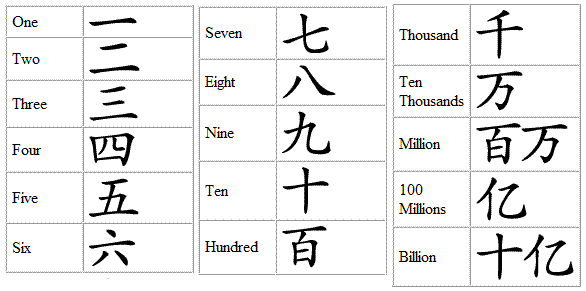
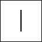
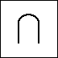
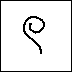
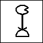
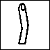
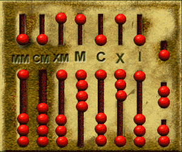

One would ideally represent "numeric values" in a universal manner, such as:

(This practice is obviously very important for their survival...)
This system is based on the following ten familiar looking symbols:
0, 1, 2, 3, 4, 5, 6, 7, 8, 9 |
I am sure you are thoroughly familiar with this decimal number system, in fact, so familiar that you do not even think about what decimal numbers actually mean...
A famous example is the number system invented by a class of humanoids that we call Romans
Roman numbers:
I, II, III, IV, V, VI, VII, VIII, IX, X, XI, XII, XIII, XIV, XV, .... |
Chinese numbers:
|  |
BTW, notice there is no symbol for ZERO. Chinese character for ZERO is:
Egyptian number system:
|  | = 1 |  | = 10 |  | = 100 |  | = 1000 |
|  | = 10000 | = 100000 | = 1000000 |
Note:
- Repesentations for numbers is an example of a code !!!
|
|
There are many other humanoids who have invented their own representation systems for numerical values, among others: Greeks (they use the Greek alphabet), Chinese (I'll show you in class...), etc.
Here is a copy of a page from a book of my 6 yr old first grader (in 2003) that show a number of number systems used in the other cultures: click here
- A value does not depends
on the representation system
used:
- If you see that there are 4 students in the classroom, no matter how you represent this number, there will be 4 students, no more and no less
- As I mentioned above: a value is an intrinsic property....
- How can I use Roman numerals to do arithmetic problems?
- Let's start with an addition problem: 23 + 58.
In Roman numerals, that's XXIII + LVIII.
We'll begin by writing the two numbers next to each other: XXIII LVIII.
Next, we rearrange the letters so that the numerals are in descending order: LXXVIIIIII.
Now we have six I's, so we'll rewrite them as VI: LXXVVI.
The two Vs are the same as an X, so we simplify again and get LXXXI, or 81, as our final answer. (We can check this answer using Arabic numerals.)
- Let's start with an addition problem: 23 + 58.
- More on this webpage:
click here
- Complex arithmetic in Roman era:
- When Romans wanted to do
complicated arithmetic problems, they
used a special counting board
or an abacus:

An abacus represents values using a positional representation:
- The right most column has weight = 1
- The second right most column has weight = 10
- And so on.
Notice that this is an encoding method !!!
It is an agreement on how to represent a value
- When Romans wanted to do
complicated arithmetic problems, they
used a special counting board
or an abacus:
- Positional (value) representation:
- A position representation system
uses the same symbol
to represent different values
- The value that is
represented by a certain symbol
depends on:
- The symbol itself, and
- The position in which that symbox is found !!!
- A position representation system
uses the same symbol
to represent different values
- Example:
- The symbol 1 in the number 111 represents the value * (= 1 dot).
- The symbol 1 in the number 111 represents the value ********** (= 10 dot).
In contrast:
- The symbol V will represent the value ***** (5) not matter where you find it in a Roman number !!!
- When humans started to use
positional system (based on 10),
we can teach children
to
add any two numbers by:
- memorize a simple addition table
- learn a simple carry/add rule
- The base 10 addition table:
| 1 2 3 4 5 6 7 8 9 ----+------------------------------------- 1 | 2 3 4 5 6 7 8 9 10 2 | 3 4 5 6 7 8 9 10 11 3 | 4 5 6 7 8 9 10 11 12 4 | 5 6 7 8 9 10 11 12 13 5 | 6 7 8 9 10 11 12 13 14 6 | 7 8 9 10 11 12 13 14 15 7 | 8 9 10 11 12 13 14 15 16 8 | 9 10 11 12 13 14 15 16 17 9 | 10 11 12 13 14 15 16 17 18
- The carry/addition rule:
- Add digits from
right to left
- When the sum of two digits exceeds 9, write down the the right most digit and add the carry to the next position of the sum
After learning these techniques, the positional systen enable a ordinary humans to become a human calculater !!!
(In contrast, a Roman fellow will need to use an abacus !!!)
- Add digits from
right to left
- Note:
- You have memorized these rules in elementary school